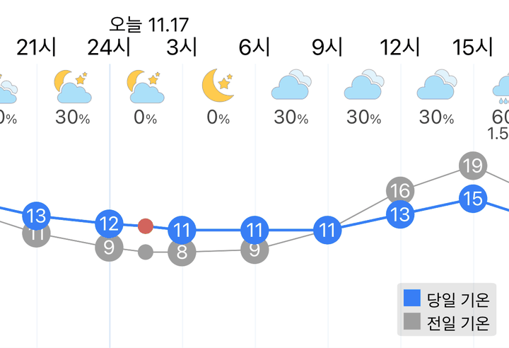
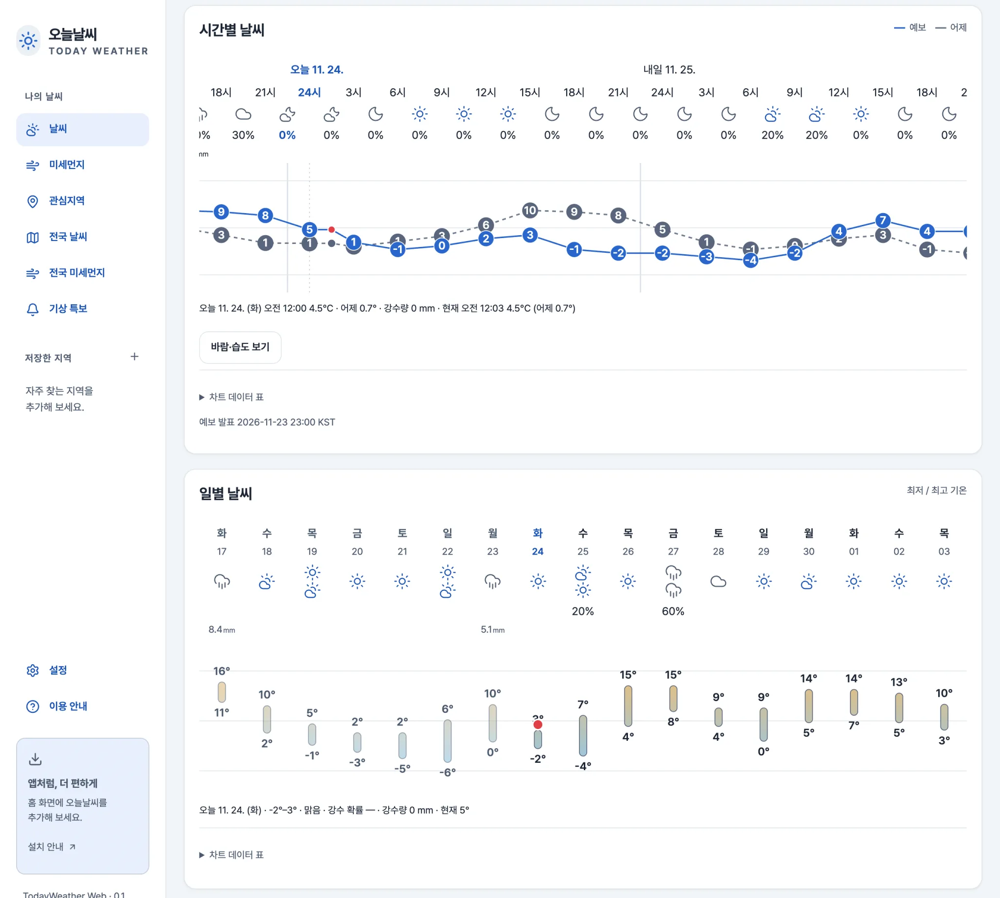

어제보다 +3°

일별 예보
하루 기온 속,
지금은 어디쯤?
막대 양끝은 그날의 최저·최고 기온이에요. 오늘 막대의 빨간 점을 보면, 지금부터 얼마나 더 따뜻해질지 가늠할 수 있어요.

웹앱
큰 화면에서는
사흘 예보를 한눈에.
설치 없이 브라우저에서 바로 열려요. 컴퓨터에서는 시간별 차트와 일별 차트를 한 화면에서 이어 볼 수 있어요.
- 오늘부터 모레까지, 어제 기온과 겹쳐 보는 시간별 예보
- 지난 일주일부터 열흘 뒤까지 이어지는 일별 최저·최고
- 전국 날씨 · 전국 미세먼지 · 기상 특보
- 홈 화면에 추가하면 앱처럼

웹앱
설치 없이 브라우저에서 열어요. 연결이 끊겨도 마지막으로 받은 날씨를 볼 수 있어요.
iPhone 앱
어제와 비교하는 홈 화면 위젯, 요일과 시각을 정해 받는 날씨 알림.
Android 앱
도시 시계 홈 화면 위젯, 요일과 시각을 정해 받는 날씨 알림.
스토어 리뷰
리뷰에서 꼽은
좋은 점.
App Store와 Google Play 리뷰에 자주 나오거나, 두 스토어에서 똑같이 나온 이야기를 골랐어요.
어제와 비교하니 바로 와닿아요
“어제랑 비교해서 한 눈에 오늘 날씨가 확 체감됩니다”
App Store 리뷰
“오늘날씨가 날씨 비교하기도 좋고 한눈에 들어와서 제일 보기 편해요”
Google Play 리뷰
오늘 뭘 입을지 정하기 쉬워요
“외출복장 선택할 때 굉장히 도움되는 어플입니다.”
App Store 리뷰
“아이들 유치부라 어제랑 비교해서 옷입히면 넘 좋더라구요”
Google Play 리뷰
깔끔해서 한눈에 들어와요
“가장 깔끔하고 직관적이며, 필요한 기능이 모두 들어있어서 사용하기에 좋아요.”
App Store 리뷰
“아주간단 명료, 심플하고 직관적이라 알아보기가 매우 편하고 복잡하지않아 좋네요.”
Google Play 리뷰
시간별 예보를 넘겨 보기 편해요
“시간별 날씨를 좌우로 움직여서 보는 것도 이 어플만큼 직관적인게 없습니다.”
App Store 리뷰
“직관적으로 시간별 날씨를 파악할 수 있다는게 오늘날씨의 가장 큰 장점인 것 같아요.”
App Store 리뷰
내일 아침, 어제와 비교해 보세요.
iPhone · Android · 웹에서 쓸 수 있어요.